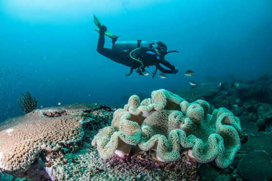
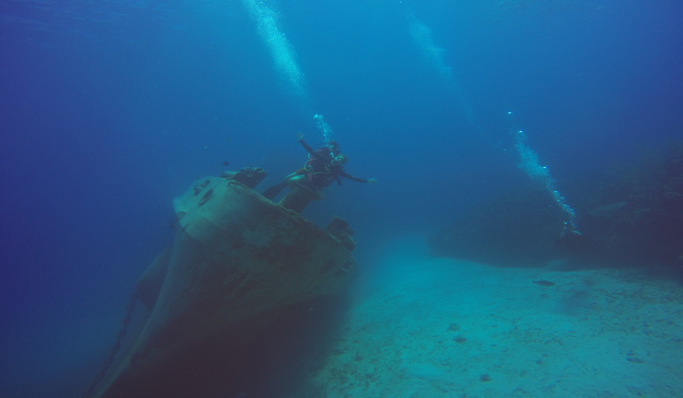
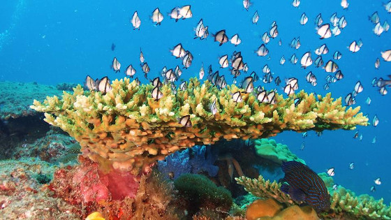
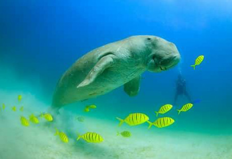
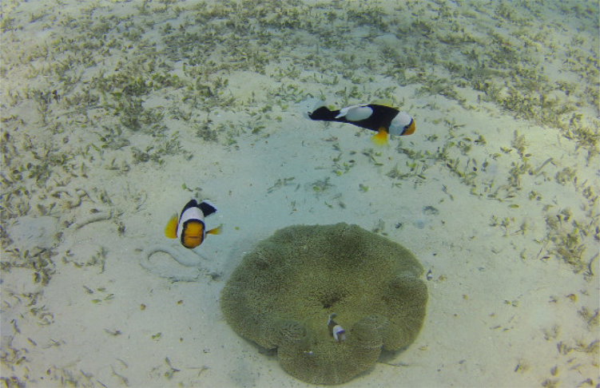
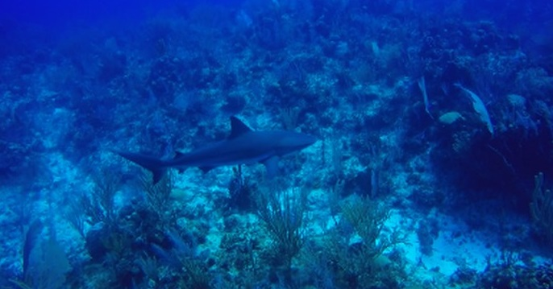

There are so many fantastic places in the world to dive. Below are regarded some of the best!
Sipidan
Barracuda Point, Sipidan, Malaysian Borneo.
Kittiwake
Kitiwake Wreck, Grand Cayman, Cayman Islands.
Ningaloo Reef
Ningaloo Reef, Broome, Western Australia.
Dugong Bay
Dimakya Island, Palawan, Philippines.
Nemo City
Nemo City, Miri, Malaysian Borneo.
Smudges Corner
Smudges Corner, East Wall, Grand Cayman, Cayman Islands